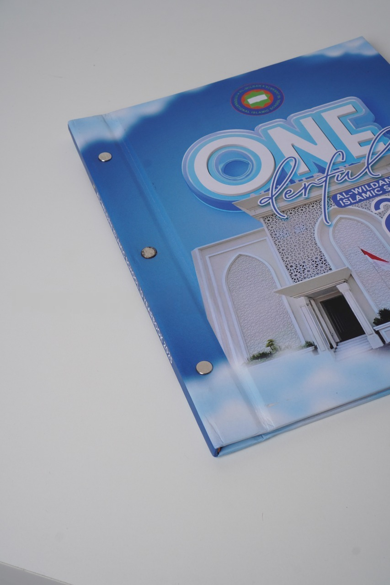
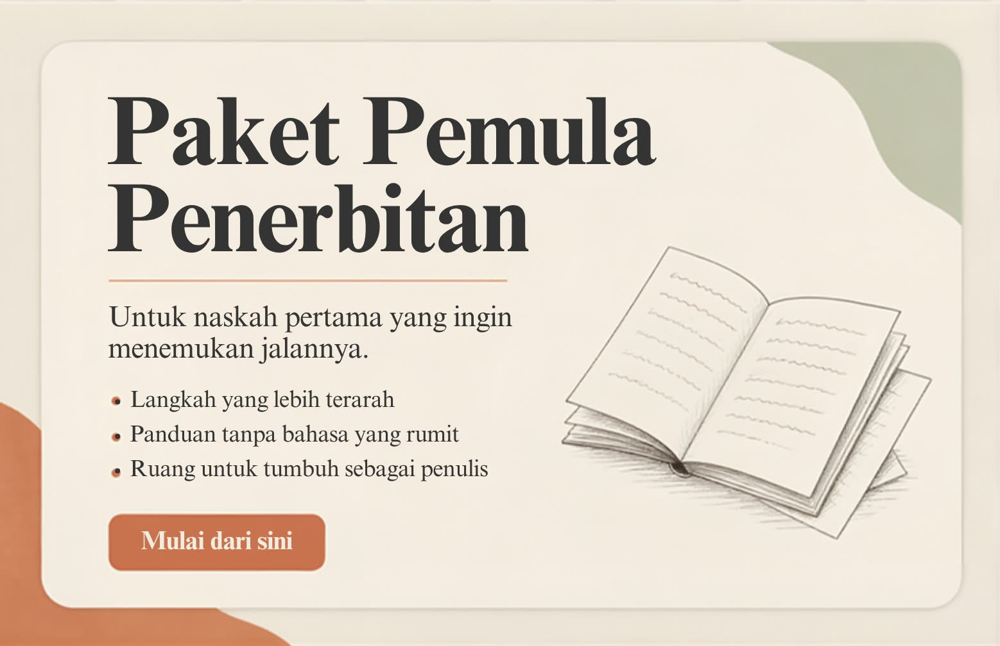

RAW MEDIA
RAW MEDIA
RAW MEDIA
RAW MEDIA
RAW Media Indonesia adalah percetakan buku yang berlokasi di Minggir, Sleman. Melayani cetak buku ajar, novel, kitab pesantren, buku tahunan, modul, dan finishing premium untuk sekolah, pesantren, kampus, dan instansi di seluruh Sleman dan Daerah Istimewa Yogyakarta.
Semua kebutuhan cetak dan penerbitan buku Anda tersedia di workshop kami di Minggir, Sleman.

Buku ajar, novel, modul, akademik. Minimal 30 pcs.

Yearbook sekolah, foto, desain custom.

Kitab, doa, hafalan, juz amma.

Jilid, laminasi, spot UV, emboss.

Pengadaan buku instansi dan kontrak.

Editing, layout, desain cover, HKI.
RAW Media Indonesia adalah percetakan dan penerbitan buku yang berlokasi di Balangan, Sendangrejo, Kecamatan Minggir, Kabupaten Sleman. Kami telah melayani kebutuhan cetak buku ajar, novel, kitab pesantren, buku tahunan, modul, dan buku umum untuk berbagai sekolah, pesantren, kampus, dan instansi di seluruh Sleman dan Daerah Istimewa Yogyakarta sejak tahun 2014.
Dengan pengalaman lebih dari 10 tahun, kami memahami kebutuhan percetakan buku lokal: pengerjaan cepat, harga bersahabat, dan komunikasi yang mudah. Workshop kami di Minggir dilengkapi mesin cetak modern dan tim finishing berpengalaman.
Kami melayani seluruh kecamatan di Kabupaten Sleman:
Kami telah dipercaya oleh berbagai institusi pendidikan di Sleman dan sekitarnya untuk kebutuhan cetak buku:
Berikut kisaran harga cetak buku di RAW Media Sleman. Harga final tergantung spesifikasi:
| Jenis Produk | Minimal Order | Estimasi Harga |
|---|---|---|
| Cetak Buku A5 (soft cover) | 30 pcs | Mulai Rp15.000,-/eks |
| Cetak Buku A5 (hard cover) | 50 pcs | Mulai Rp35.000,-/eks |
| Cetak Buku Tahunan A4 | 100 pcs | Mulai Rp65.000,-/eks |
| Cetak Kitab Pesantren | 50 pcs | Mulai Rp20.000,-/eks |
| Cetak Modul / LKS | 30 pcs | Mulai Rp12.000,-/eks |
*Harga dapat berubah. Hubungi WhatsApp untuk penawaran resmi.
Selain Sleman, kami juga melayani cetak buku untuk area Kota Yogyakarta, Bantul, Kulon Progo, dan Gunungkidul. Untuk luar DIY, kami kirim via ekspedisi ke seluruh Indonesia.
Kunjungi langsung workshop kami di Minggir, Sleman. Silakan hubungi dulu untuk memastikan tim siap menerima Anda.
Foto asli workshop dan proses produksi di Minggir, Sleman.


Apa kata klien kami yang berlokasi di Sleman dan sekitarnya.
"Pesan buku tahunan untuk SMK di Sleman, hasil rapi dan selesai tepat waktu. Komunikasi mudah via WhatsApp."
"Cetak kitab pesantren di Sleman, harga bersahabat dan kualitas bagus. Sudah 3 kali order."
"Bisa COD di Sleman, praktis. Cetak buku ajar untuk kampus cepat selesai."
Pertanyaan yang sering ditanyakan pelanggan dari Sleman.
RAW Media Indonesia buka Senin sampai Sabtu, pukul 09.00-17.00 WIB. Berlokasi di Balangan, Sendangrejo, Minggir, Sleman.
Harga cetak buku di RAW Media mulai dari Rp15.000 per eksemplar tergantung jumlah halaman, ukuran, dan jenis kertas. Minimal order 30 pcs. Hubungi WhatsApp untuk penawaran detail.
Ya, untuk area Sleman dan sekitarnya kami menyediakan opsi COD atau pengambilan langsung di workshop Minggir. Untuk luar kota menggunakan ekspedisi.
Ya, kami telah melayani berbagai sekolah, pesantren, dan kampus di Sleman untuk cetak buku tahunan, buku ajar, modul, dan kitab pesantren.
Ya, kami melayani cetak kitab pesantren, juz amma, dan buku hafalan untuk pondok pesantren di Sleman dan seluruh DIY.
Dari pusat kota Yogyakarta, ambil arah ke barat via Jalan Godean atau Jalan Wates, sekitar 30-40 menit berkendara. Lokasi di Balangan, Sendangrejo, Minggir, Sleman. Bisa juga cari 'RAW Media Indonesia' di Google Maps.
Chat kami sekarang — konsultasi gratis, respon cepat, harga bersahabat.